La persistencia de datos es un aspecto muy importante en las aplicaciones móviles.
La primera situación conocida ocurre al cambiar la orientación/configuración del dispositivo; esto se resuelve con estados y ViewModel.
Además, existen otras situaciones en las que interesa guardar datos para usarlos más adelante.
En esta unidad se estudiarán las siguientes herramientas para implementar la persistencia de datos:
Como cualquier sistema operativo, Android utiliza un sistema de ficheros.
Este sistema de ficheros ofrece varias opciones para almacenar datos de la aplicación:
Guarda archivos destinados solo para el uso de la propia aplicación.
Se pueden crear carpetas dedicadas tanto en el almacenamiento interno como externo.
El almacenamiento interno debe usarse para información confidencial (otras apps no tendrán acceso a ella).
Guarda archivos que la aplicación puede compartir con otras apps, como documentos, medios (audio, video…) u otros archivos.
Almacenamiento privado para la aplicación. Permite pares clave-valor.
Guarda datos estructurados de forma privada usando la librería Room (un framework que utiliza SQLite).
Se puede consultar la siguiente tabla resumen en la documentación oficial:
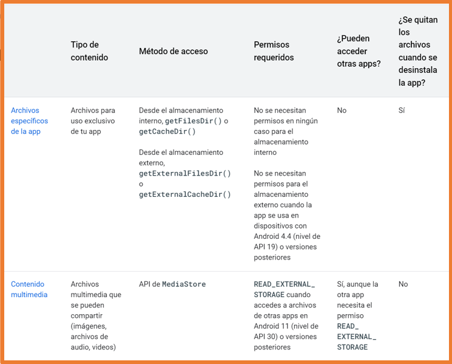
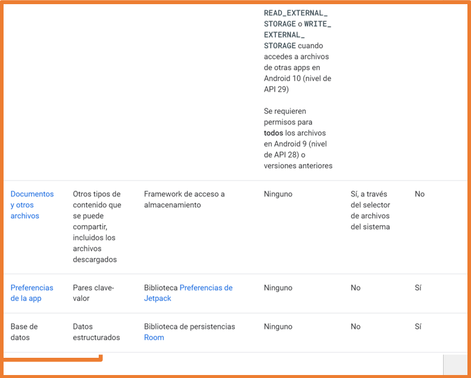
Al elegir un tipo de almacenamiento influyen varias variables:
Android ofrece las siguientes ubicaciones para uso exclusivo de la aplicación.
Directorios en almacenamiento interno:
Directorios en almacenamiento externo:
Ambas opciones incluyen un directorio para almacenar archivos persistentes y otro para caché.
Los archivos comunes y persistentes se encuentran en un directorio accesible mediante la propiedad filesDir de un objeto context.
Usando la API de File (similar a Java), se pueden acceder y almacenar archivos.
Para evitar afectar el rendimiento de la app, no se debe abrir y cerrar el mismo archivo múltiples veces.
Así es como se abre un archivo usando la API:
val file = File(applicationContext.filesDir, "file_name")Almacenar un archivo usando un Stream
Como alternativa a la API de File, se puede usar el método openFileOutput() para obtener un objeto FileOutputStream, que permite escribir en un archivo dentro del directorio filesDir.
val myFile = "myFile"
val content = "My first Android file!"
applicationContext.openFileOutput(myFile, Context.MODE_PRIVATE).use {
it.write(content.toByteArray())
}
Desde Android Studio, se pueden ver los archivos creados usando el Device File Explorer:
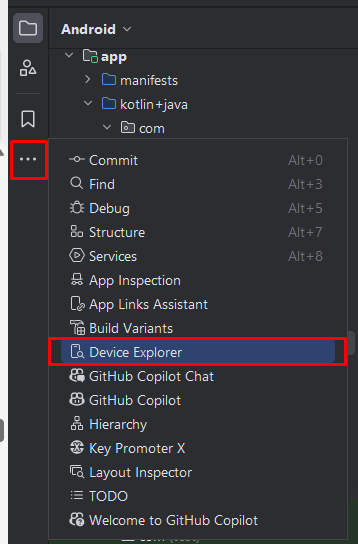
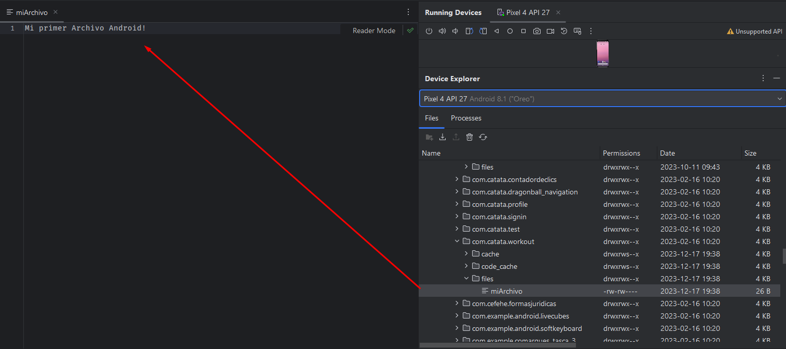
En Android 7 (API 24) o superior, si no se especifica Context.MODE_PRIVATE, se lanzará una excepción de seguridad
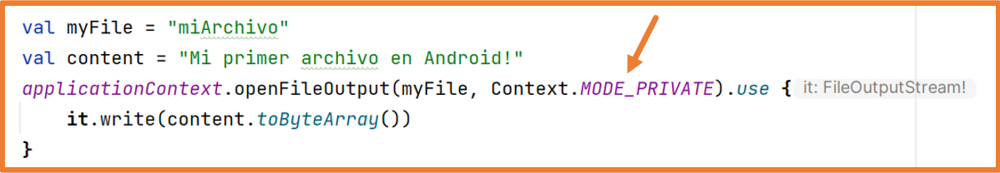
Si se desea permitir que otras aplicaciones accedan a los archivos del almacenamiento interno, se debe usar un FileProvider con el atributo FLAG_GRANT_READ_URI_PERMISSION.
Para leer el contenido de un archivo, use el método openFileInput() para obtener un objeto BufferedReader que devuelve una secuencia de cadenas:
// Access file using Stream
applicationContext.openFileInput(myFile).bufferedReader().useLines { fileContent ->
var text = ""
fileContent.forEach {
text += it
}
Text(text = text)
}
Visualizar lista de archivos
Se puede obtener un array con los nombres de los archivos en el directorio filesDir usando el método fileList():
val files: Array = applicationContext.fileList()
Column() {
files.forEach {
Text(text = it)
}
}
Subdirectorios
Si es necesario, se pueden crear subdirectorios usando el método getDir().
Este método también permite acceder a los subdirectorios creados.
applicationContext.getDir("subdirectory", Context.MODE_PRIVATE)Este método tiene un pequeño inconveniente: crea el directorio con el prefijo app_ y fuera del directorio files:
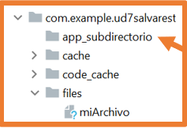
Para crear subdirectorios dentro de files, se pueden usar los métodos de la clase File como en Java.
val appDir: File = applicationContext.filesDir
val subDir = File(appDir, "subDirectory")
if (!subDir.exists()) subDir.mkdir()
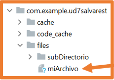
Si necesitas almacenar temporalmente ficheros (incluidos datos sensibles), utiliza el directorio cache.
Para crear un archivo en el almacenamiento de caché, usa File.createTempFile(), especifica el prefijo (nombre), el sufijo (extensión, por defecto .tmp) y un objeto de contexto:
File.createTempFile("temporaryFile", null, applicationContext.cacheDir)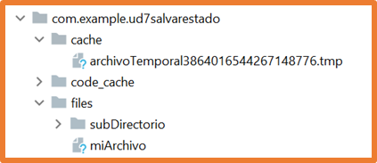
Para acceder a los archivos en el directorio de caché, usa la propiedad cacheDir en un contexto y la clase File:
val cacheFile = File(applicationContext.cacheDir, "fileName")El directorio cache es gestionado por Android, si la app se queda sin espacio, Android eliminará los archivos almacenados en ese directorio.
Se pueden eliminar archivos del directorio de caché usando uno de los siguientes métodos.
applicationContext.deleteFile("fileName")val fileToDelete = File(applicationContext.filesDir, "fileName")
fileToDelete.delete()
//En caché
val cacheFile = File(applicationContext.cacheDir, "fileName")
cacheFile.delete()
Si se necesita espacio adicional para ficheros específicos de la aplicación, se puede usar el almacenamiento externo siempre que esté disponible.
El almacenamiento externo puede residir en una partición de la memoria interna o en un dispositivo externo como una tarjeta SD o un pendrive conectado por USB.
Si el almacenamiento externo está en un dispositivo conectado, puede dejar de estar disponible (por ejemplo, al extraer la SD).
Por ello, no conviene depender de ficheros en almacenamiento externo para el funcionamiento crítico de la aplicación.
Es importante comprobar que el almacenamiento externo está disponible antes de leer o escribir en él.
Usando la clase Environment y su método getExternalStorageState se puede comprobar su estado y permisos.
Si el estado es MEDIA_MOUNTED hay permisos de lectura y escritura; si es MEDIA_MOUNTED_READ_ONLY solo lectura.
Una buena forma de comprobar esto sería con las siguientes funciones:
fun isExternalStorageWritable(): Boolean {
return Environment.getExternalStorageState() == Environment.MEDIA_MOUNTED
}
fun isExternalStorageReadable(): Boolean {
return Environment.getExternalStorageState() in
setOf(Environment.MEDIA_MOUNTED, Environment.MEDIA_MOUNTED_READ_ONLY)
}
Dado que el almacenamiento externo puede estar en la memoria interna o en un dispositivo conectado, al almacenar información en él, se debe elegir la ubicación.
Para acceder a las ubicaciones, usa la clase ContextCompat y su método getExternalFilesDirs.
Esto devolverá un array con todos los volúmenes disponibles.
Generalmente, el primer elemento del array será el volumen principal de almacenamiento externo, y este debe ser utilizado a menos que esté lleno o no disponible.
El siguiente código obtiene la ruta al volumen principal de almacenamiento externo.
val externalStorageVolumes: Array =
ContextCompat.getExternalFilesDirs(applicationContext, null)
val primaryExternalStorage = externalStorageVolumes[0]
Al comprobar el tamaño del array externalStorageVolumes, se puede determinar si hay volúmenes adicionales.
El primer elemento (índice 0) es el almacenamiento interno.
La tarjeta microSD suele ser el segundo elemento (índice 1).
Si hay otros dispositivos como pendrives conectados, aparecerán después.
Con el índice 1, se puede acceder a todo el almacenamiento externo.
val externalStorage = applicationContext.getExternalFilesDirs(null)[1]Se puede especificar un directorio particular dentro del almacenamiento externo:
val externalDownloads = applicationContext.getExternalFilesDirs(Environment.DIRECTORY_DOWNLOADS)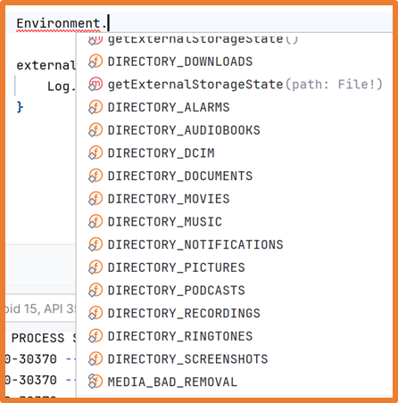
Para acceder a archivos en el almacenamiento externo, usa el método getExternalFilesDir de un objeto context.
Para evitar afectar el rendimiento de la aplicación, no se debe abrir y cerrar el mismo archivo múltiples veces.
val fileName = "myFile"
val appSpecificExternalDir = File(applicationContext.getExternalFilesDir(null), fileName)
En Android 11 (API 30) y versiones superiores, no se permite crear subdirectorios en el almacenamiento externo.
Para crear un archivo en la caché del almacenamiento externo, usa la propiedad externalCacheDir de un context:
val cacheFileName = "myTemporaryFile"
val externalCacheFile = File(applicationContext.externalCacheDir, cacheFileName)
Se debe usar el método delete en un objeto File que represente el archivo a eliminar.
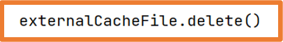
Si la app trabaja con archivos multimedia que no son esenciales pero añaden valor a la experiencia del usuario, es mejor almacenarlos en el almacenamiento externo:
fun getAppSpecificAlbumStorageDir(context: Context, albumName: String): File? {
val file = File(context.getExternalFilesDir(Environment.DIRECTORY_PICTURES), albumName)
if (!file.mkdirs()) {
// Error creating the directory
}
return file
}
Para el correcto funcionamiento de la aplicación, es importante usar los nombres de directorio que proporciona la API con las constantes de la clase Environment:
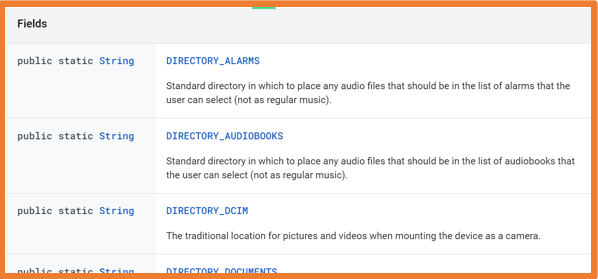
https://developer.android.com/reference/android/os/Environment#fields
Si ninguno de los nombres predefinidos se ajusta a las necesidades de la aplicación, se puede pasar null al método getExternalFilesDir.
Esto almacenará los archivos directamente en el directorio raíz del almacenamiento externo específico de la aplicación.
Algunos dispositivos tienen muy poco espacio de almacenamiento, por lo que al desarrollar una aplicación, se debe tener especial cuidado con el espacio que ocupa.
Una buena práctica antes de almacenar un archivo es comprobar si cabe en el espacio disponible.
No obstante, no siempre es necesario comprobar el espacio libre, ya que a veces no se sabe cuánto espacio ocupará el archivo. En estos casos, se puede intentar guardar el archivo y capturar la IOException que se lanzará si no se puede almacenar.
Para comprobar el espacio libre que el dispositivo puede proporcionar, usa el método getAllocatableBytes.
Este método puede mostrar a veces más capacidad de la real porque el sistema puede haber detectado archivos en las cachés de otras aplicaciones y puede eliminarlos si es necesario.
Si hay suficiente espacio, se debe usar el método allocateBytes. Si no se usa este método, la app puede solicitar al usuario que elimine archivos o limpie toda la caché del dispositivo.
El siguiente código muestra cómo obtener el espacio libre del dispositivo:
// 10 MB of storage is needed.
val NUM_BYTES_NEEDED_FOR_MY_APP = 1024 * 1024 * 10L;
val storageManager = applicationContext.getSystemService<StorageManager>()!!
val appSpecificInternalDirUuid: UUID = storageManager.getUuidForPath(filesDir)
val availableBytes: Long = storageManager.getAllocatableBytes(appSpecificInternalDirUuid)
if (availableBytes >= NUM_BYTES_NEEDED_FOR_MY_APP) {
storageManager.allocateBytes(appSpecificInternalDirUuid, NUM_BYTES_NEEDED_FOR_MY_APP)
} else {
val storageIntent = Intent().apply {
action = ACTION_MANAGE_STORAGE
}
}
DataStore permite almacenar pequeños conjuntos de datos en el dispositivo.
Los datos guardados con DataStore se almacenan en el almacenamiento interno de la app y no son accesibles por otras apps.
DataStore tiene dos implementaciones:
Por la complejidad de Proto DataStore, en clase nos centraremos en Preferences DataStore.
DataStore permite crear archivos para almacenar información, generalmente preferencias.
La ventaja de DataStore es que el sistema operativo se encarga de toda la gestión de los archivos de preferencias.
Reglas para usar DataStore:
// Declarado fuera de la clase para asegurar una única instancia (Singleton)
private val Context.dataStore: DataStore<Preferences> by preferencesDataStore(name = "preferences")
class AppPreferences(val context: Context) {
companion object{
val NAME = stringPreferencesKey("NAME")
}
suspend fun saveFullName(name: String){
context.dataStore.edit { preferences ->
preferences[NAME] = name
}
}
fun loadName(): Flow<String> = context.dataStore.data.map { preferences ->
preferences[NAME] ?: ""
}
}En el ViewModel, convertiremos el Flow de DataStore en un StateFlow para que la UI pueda observar el estado de forma eficiente.
Recuerda añadir las dependencias necesarias:
datastorePreferences = "1.1.2"
lifecycleCompose = "2.8.7" // Requerido para collectAsStateWithLifecycleimplementation(libs.androidx.datastore)
implementation(libs.androidx.lifecycle.runtime.compose)ViewModel con StateFlow
class PreferencesViewModel(application: Application): AndroidViewModel(application) {
private val preferences = AppPreferences(application.applicationContext)
// Usamos StateFlow para representar el estado actual
private val _fullName = MutableStateFlow("")
val fullName: StateFlow<String> = _fullName.asStateFlow()
fun onFullNameChange(name: String){
_fullName.value = name
}
fun saveFullName(name: String){
viewModelScope.launch {
preferences.saveFullName(name)
_fullName.value = "" // Opcional: limpiar tras guardar
}
}
fun loadFullName(){
viewModelScope.launch {
preferences.loadName().collect { name ->
_fullName.value = name
}
}
}
}Consumo en Jetpack Compose
Para observar flujos en Compose de forma segura para el ciclo de vida, usamos collectAsStateWithLifecycle().
// En tu pantalla composable
val fullName by viewModel.fullName.collectAsStateWithLifecycle()
TextField(
value = fullName,
onValueChange = { viewModel.onFullNameChange(it) },
label = { Text("Nombre Completo") }
)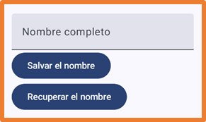
Room es la capa de persistencia recomendada por Google. Proporciona una abstracción sobre SQLite que ofrece:
En el desarrollo actual, es fundamental desacoplar la base de datos de la UI usando Repositorios y flujos de datos asíncronos.
Asegúrate de tener configurado KSP (Kotlin Symbol Processing), que es el sucesor de KAPT para el procesamiento de anotaciones.
libs.versions.toml:
room = "2.6.1"
ksp = "2.0.21-1.0.27" // Versión compatible con tu versión de KotlinCrearemos una app de tareas donde la UI reacciona automáticamente a cualquier cambio en la base de datos sin necesidad de recargar manualmente.
Entidad
@Entity(tableName = "tasks")
data class TaskEntity(
@PrimaryKey(autoGenerate = true) val id: Int = 0,
val name: String,
val isDone: Boolean = false
)DAO (Data Access Object) con Flow
El uso de Flow permite que la consulta emita una nueva lista cada vez que los datos en la tabla cambien.
@Dao
interface TaskDAO {
@Query("SELECT * FROM tasks ORDER BY name")
fun getAllTasks(): Flow<List<TaskEntity>> // Emite cambios automáticamente
@Insert(onConflict = OnConflictStrategy.REPLACE)
suspend fun addTask(item: TaskEntity)
@Update
suspend fun updateTask(item: TaskEntity)
@Delete
suspend fun deleteTask(item: TaskEntity)
@Query("SELECT EXISTS (SELECT 1 FROM tasks WHERE name = :name)")
suspend fun taskExists(name: String): Boolean
}Repositorio y Casos de Uso
El Repositorio actúa como puente, transformando las entidades de base de datos en modelos de dominio.
class TaskRepository(private val taskDAO: TaskDAO) {
val tasks: Flow<List<Task>> = taskDAO.getAllTasks().map { entities ->
entities.map { Task(it.id, it.name, it.isDone) }
}
suspend fun addTask(task: Task) = taskDAO.addTask(TaskEntity(name = task.name))
// ... resto de métodos suspendidos
}ViewModel (Patrón Moderno)
En el ViewModel, transformamos el Flow del repositorio en un StateFlow usando el operador stateIn.
class TaskViewModel(application: Application) : AndroidViewModel(application) {
private val taskDAO = TasksDatabase.getInstance(application).taskDAO()
private val repository = TaskRepository(taskDAO)
private val useCase = TaskUseCase(repository)
// El flujo se mantiene activo mientras se observa en la UI
val taskList: StateFlow<List<Task>> = useCase.getAllTasks()
.stateIn(
scope = viewModelScope,
started = SharingStarted.WhileSubscribed(5000),
initialValue = emptyList()
)
fun addTask(name: String) {
viewModelScope.launch(Dispatchers.IO) {
useCase.addTask(name)
}
}
}UI en MainScreen.kt
Implementación correcta para instanciar ViewModels y observar estados en Compose.
@Composable
fun MainScreen(taskViewModel: TaskViewModel = viewModel()) {
// Usamos viewModel() para obtener la instancia correcta que sobrevive a rotaciones
// NUNCA uses remember { TaskViewModel() }
val tasks by taskViewModel.taskList.collectAsStateWithLifecycle()
// ViewModel local para estados efímeros de la pantalla
val mainScreenViewModel: MainScreenViewModel = viewModel()
val inputTaskName by mainScreenViewModel.taskName.collectAsStateWithLifecycle()
AppScaffold {
Column {
TextField(
value = inputTaskName,
onValueChange = { mainScreenViewModel.onTaskNameChange(it) }
)
LazyColumn {
items(tasks, key = { it.id }) { task ->
TaskItem(task = task, ...)
}
}
}
}
}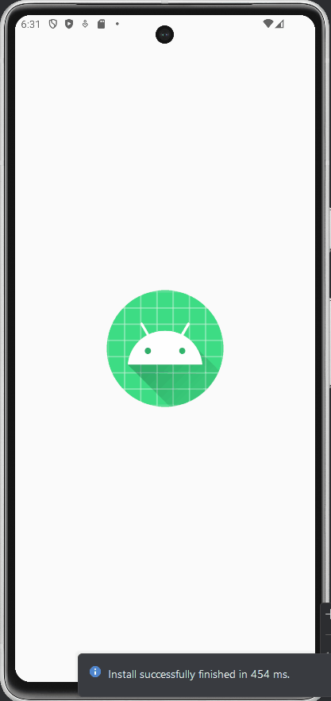
Aquí puedes ver el ejemplo completo original
La práctica consiste en realizar una aplicación de lista de la compra con Room y DataStore siguiendo los patrones reactivos estudiados: